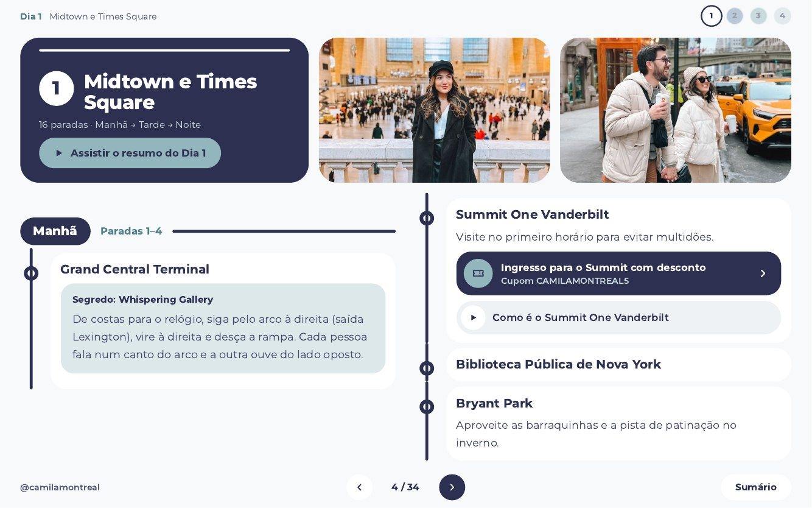
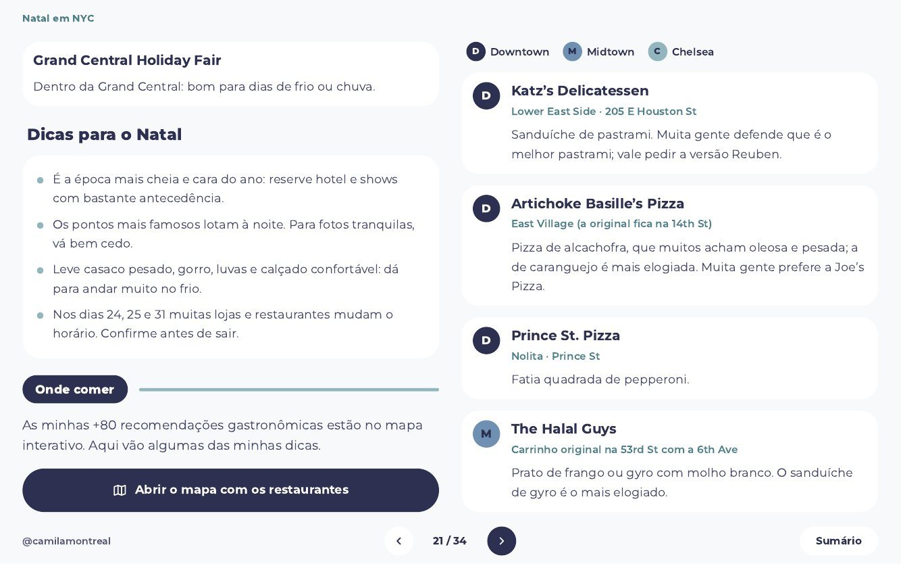
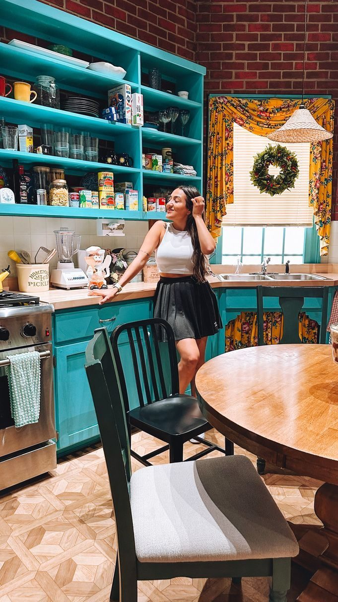

Nova York organizada,
para você aproveitar mais e planejar menos.
Um roteiro de 4 dias, dividido por região, com as minhas dicas, atalhos e links de reserva, tudo em um só guia.

mapa interativo com +200 locais!
roteiro dia a dia!
feito pra usar na viagem, até offline!
4 dias de roteiro
57 paradas por região
+200 locais no mapa
20 locações de filmes e séries
Receba todas as atualizações gratuitamente!
sempre que eu conhecer um lugar novo, você vai saber.
Quantos dias você fica em Nova York?
4 dias: Midtown, Central Park, Estátua, Brooklyn e Hudson Yards
É a soma das paradas dos dias do guia que cabem na sua viagem: 16 no Dia 1, 11 no Dia 2, 16 no Dia 3 e 14 no Dia 4. As paradas marcadas como opcionais podem ficar de fora se faltar tempo.
Veja o guia por dentro
Páginas reais: sumário clicável, paradas por período do dia, links de reserva e vídeos.






Sumário: toque e vá direto para o dia ou a seção que você precisa.
O que só quem já foi conta


Whispering Gallery
De costas para o relógio, siga pelo arco à direita (saída Lexington), vire à direita e desça a rampa. Cada pessoa fala num canto do arco e a outra ouve do lado oposto.
O que está incluso?
- Roteiro detalhado dia a dia, com manhã, tarde e noite
- Dicas de quem já foi a Nova York inúmeras vezes
- Segredos que poucos turistas conhecem
- Guia fotográfico com os melhores ângulos
- Mapa interativo com +200 locais, restaurantes e banheiros gratuitos
- Links de reserva com desconto em ingressos e passeios
- Lista de 20 locações de filmes e séries famosas
- Atualizações gratuitas pelo mesmo link
Roteiro e mapa funcionam offline depois de baixados.

Erros para evitar
6 dicas do guiaTrem do aeroporto
Eu comprei o bilhete errado, perdi o certo e gastei US$ 200 na primeira hora. O guia manda pesquisar o bilhete exato antes de embarcar.

Estátua da Liberdade
Sem desembarque na ilha, o Staten Island Ferry é gratuito. O guia diz como chegar e de que lado sentar.
Ingresso de Broadway
A loteria dá chance de ingressos bem mais baratos, e há áudio-guia e legendas em português para vários musicais.
Café mais caro do que precisava
Antes de pedir, procure promoções na porta. Eu paguei US$ 2 em vez de 4 só perguntando.
Patinação no gelo
Preço de cada pista, e qual delas tem entrada grátis: no Bryant Park você paga só o aluguel dos patins.

Banheiro público
É quase impossível achar banheiro público em Nova York. O mapa interativo tem uma aba só com banheiros gratuitos.
Dicas soltas ajudam
- Cada post fala de um lugar
- Você decide sozinha(o) a ordem
- Difícil de achar de novo
- Todo lugar parece imperdível
- Links espalhados pelas redes
Este guia poupa tempo
- Roteiro de 4 dias, organizado por região
- Manhã, tarde e noite já sugeridos
- Sumário clicável
- Marco o que é opcional e o que eu pularia
- Links de reserva, mapa e vídeos no mesmo lugar
Você continua usando as redes. Só não precisa montar tudo sozinha(o).
De caos para quatro dias
Cada círculo é uma parada do guia: soltas, juntas e, por fim, em fila, uma fileira por dia.
{{SVG_D}} {{SVG_M}}Antes de viajar
Leia o sumário, escolha os dias que quer, reserve o que precisa pelos links com desconto, baixe os mapas e configure o celular.
Na cidade
Abra o dia, siga manhã, tarde e noite e pule o que estiver marcado como opcional se faltar tempo.
No celular
Há uma versão pensada para a tela do celular, com rolagem vertical. Você pode baixar o PDF e abrir sem internet.

Quem é a sua guia?
Cami tem 30 anos, já conheceu 27 países e mora no Canadá há quase 3 anos. Já perdeu a conta de quantas vezes foi a Nova York.
Seu amor por novas culturas e sabores faz a Cami explorar ao máximo os destinos e planejar os mínimos detalhes das viagens. É formada em Marketing, pós-graduada em Inteligência Competitiva e Inovação em Marketing, e soma mais de 600 mil seguidores nas redes.
É para você se
- Está planejando viajar para Nova York e quer um roteiro pronto para adaptar.
- Prefere ter tudo organizado em um lugar.
- Quer dicas práticas, com horário, endereço e preço.
- Quer um guia com opinião, não uma lista neutra.
Talvez não seja se
- Prefere improvisar tudo e não gosta de roteiro.
- Procura um guia focado em compras ou vida noturna. O guia cobre os dois, mas o foco é turismo e experiências.
- Quer um roteiro de mais de 4 dias completos. Há ideias extras na seção "Tem mais dias?".
- Espera atendimento individual. O guia é um material digital.
Seu embarque
Nova York · o roteiro perfeito
R$ 67,90 à vista, ou em até 9× de R$ 8,92 (parcelas com juros a partir de 2×)Cartão de crédito, Pix, boleto ou PayPal.
Você recebe o link do PDF interativo (versões desktop e celular), o mapa interativo, atualizações gratuitas e garantia de 7 dias.
Nova York · o roteiro perfeito
CAD 21 pagamento único, sem mensalidadeCartão de crédito, PayPal ou Klarna.
Você recebe o link do PDF interativo (versões desktop e celular), o mapa interativo, atualizações gratuitas e garantia de 7 dias.
Perguntas frequentes
Quando vou ter acesso ao guia?
Assim que o pagamento for confirmado, você recebe um e-mail com o link do PDF interativo, com versão para desktop e versão para celular.
O que vou receber?
O PDF premium com o roteiro dia a dia, o acesso ao mapa interativo e vários links de desconto para ingressos, atividades e experiências.
Funciona para quem não fala outra língua além do português?
Sim! O guia foi feito todo em português e tem várias dicas para quem nunca foi ao destino, inclusive dicas culturais, além de dicas para ver musicais em português.
Qual a diferença desse roteiro para qualquer outro?
Além de especialidade no destino, o guia não mostra apenas atrações turísticas. Você encontra dicas que poucos turistas conhecem, experiências que poucos turistas fazem, dicas de aplicativos e sites, o que vestir, onde comer e onde tirar as melhores fotos.
Preciso de internet na viagem para acessar o guia?
Não! Tanto o roteiro quanto o mapa podem ser acessados offline. Menos uma coisa para você se preocupar durante a viagem.
16 paradas em um dia não é demais?
É um menu organizado por região, não uma obrigação. Há paradas marcadas como opcionais e muitas são só uma passada ou uma foto. Você escolhe o ritmo.
Os preços e horários estão atualizados?
Preços e horários em Nova York mudam. O guia recebe atualizações gratuitas pelo mesmo link, e eu recomendo conferir o site oficial antes de comprar ingressos.
O que são os links com desconto?
São links de reserva de passeios, ingressos e serviços com o meu cupom. Alguns parceiros me pagam uma comissão quando você reserva pelo link, sem custo extra para você.
E se eu não gostar?
Você pode pedir o reembolso em até 7 dias. Escreva para o contato que está no rodapé da página.
Existem roteiros para outros destinos?
Sim! Você pode conferir todos os meus roteiros nas minhas redes.
Quer conhecer o melhor de NY?
Você já escolheu o destino. Falta só decidir como quer chegar lá: com 30 abas abertas ou com um guia na mão.
Eu quero